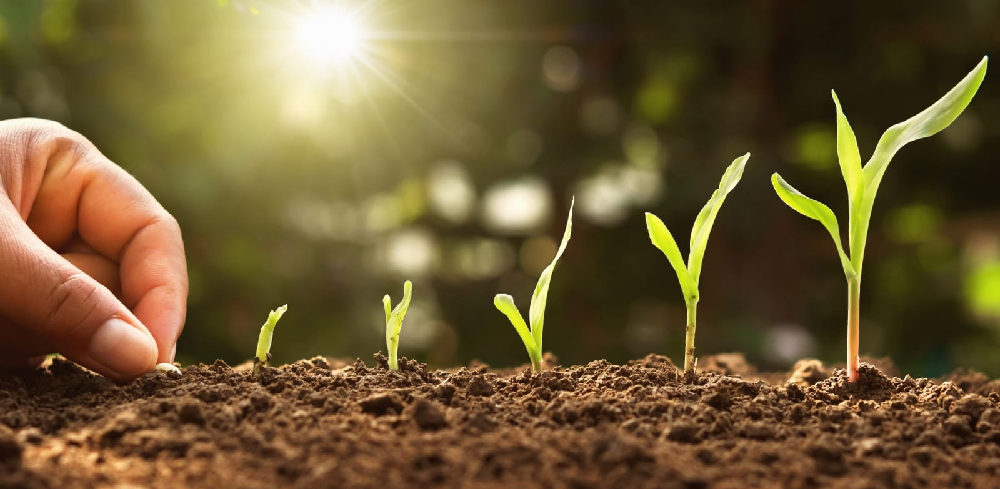
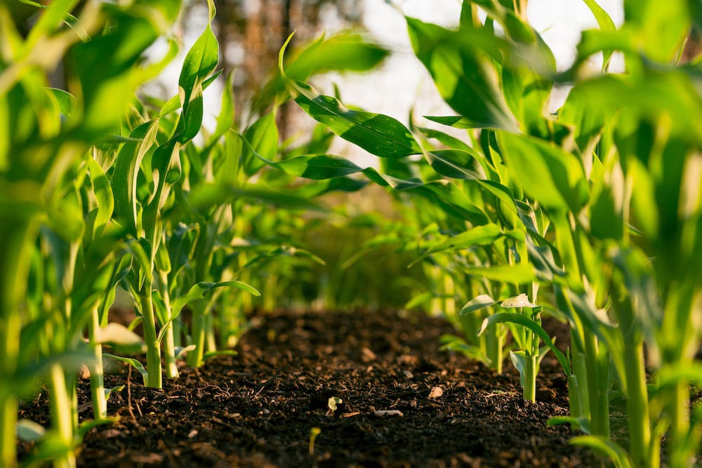
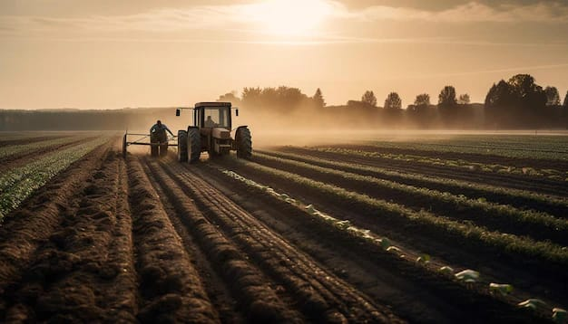

ORGANIC FARMING
Organic famring can be defined as a agriculture process that uses biological fertilisers and pest control. Organic farming was actually initiated as an answer to the environmental sufferings caused by the use of chemical pesticides and synthetic fertilizers
WHY ORGANIC.?
It helps to maintain environment health by reducing the level of pollution. It reduces human and animal hazards by reducing the level of redidues in the product. It helps in keeping agriculture production at a sustainable level.
IMPLEMENTATION
It is the method of farming system which primarily aims at cultivating the land and raising crops in such a way, so as to keep the soil alive and in good health by use of organic waste and other biological materials along with biofertilizers